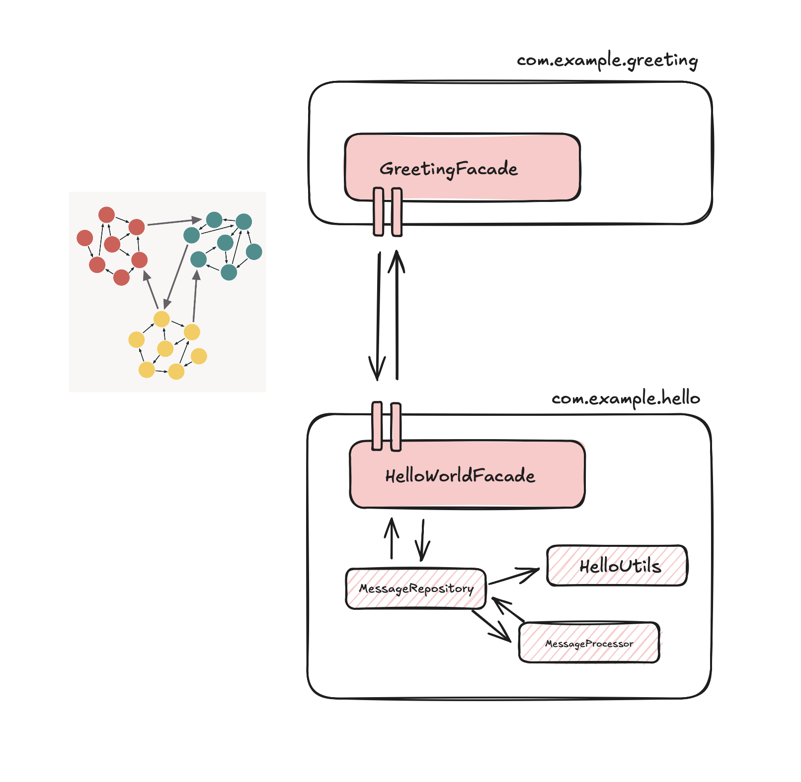

Challenges of Distributed Systems
Grzegorz Piwowarek
@pivovarit
{ 4comprehension.com }
WarsawJUG | Vavr | Oracle ACE
Independent Consultant/Trainer
distributed systems | microservices | async | reactive | java@pivovarit
What makes systems...distributed?
CAP Theorem
- Consistency
- Availability
- Partition tolerance
Consistency
every read receives the most recent write
(a single-copy illusion)Availability
every request receives a non-error response
(even if some nodes are down)Partition tolerance
system continues to operate even if network links are lost
distributed systems are systems that communicate over unreliable channels
Rule: In the presence of a network partition, a distributed system must choose either Consistency or Availability.
...

 https://twitter.com/ddprrt/status/1425418538257428488
https://twitter.com/ddprrt/status/1425418538257428488
 https://twitter.com/ddprrt/status/1425418538257428488
https://twitter.com/ddprrt/status/1425418538257428488

"It was the invention of the null reference in 1965...I call it my billion-dollar mistake."Tony Hoare

Another "billion-dollar mistake":
Microservices
Another "billion-dollar mistake":
"Micro"
Microservice vs service?
How small is "micro"?
N lines of code?
N endpoints?
N classes?
N MBs?
N responsibilities?
Rewritable in X time?
Microservices: the Main Idea
Enable scalability through independence and modularity
Tight coupling - Low cohesion

source: https://enterprisecraftsmanship.com/posts/cohesion-coupling-difference/
Low coupling - High cohesion

source: https://enterprisecraftsmanship.com/posts/cohesion-coupling-difference/
You can have modularity without microservices
 Naturally, you don't get all the benefits, but it's not a demanding investment
"The smaller the service, the more you maximize the benefits and downsides of microservice architecture."Sam Newman

author: Bruce Wong
Netflix: 2000 engineers

However, don't be fooled by the size of those microservices, because a lot of those so-called microservices at Netflix are a lot larger, just looking at the code base, than the big monoliths that I've worked at, at many other companies.Paul Bakker
source: https://www.infoq.com/presentations/netflix-java/
Do not ask about the max size, but when to split
So... when do we split?
When it hurts too much
The #1 rule of distributed systems: don't do it until you have to
The Pragmatic Default

https://twitter.com/dhh/status/1247522358908215296
Our server app is a monolith, one big codebase of several million lines and a few thousand Django endpoints [1], all loaded up and served together. A few services have been split out of the monolith, but we don’t have any plans to aggressively break it up.https://instagram-engineering.com/static-analysis-at-scale-an-instagram-story-8f498ab71a0c
Reliability in an unreliable world
When sending a message over unreliable channels, how to guarantee delivery?
(...thought experiment...)
Definition
An operation is idempotent if performing it multiple times produces the same effect as performing it once.
f(f(x)) = f(x)Examples
- Setting a user’s status to “active” → ✅
- Incrementing a counter → ❌
In a distributed system
Failures and retries are inevitable.
- Network retries may cause duplicate requests
- Clients or load balancers might resend operations
- Idempotency prevents unwanted side effects
Exactly-once delivery?
A fairy tale.
Reality: You only ever get:
- at-most-once → messages may be lost
- at-least-once → messages may be duplicated
Exactly-once doesn’t exist
- Networks can fail between send and acknowledge
- Clients can retry
- Servers can crash mid-processing
Exactly-once effect
We can’t guarantee exactly-once delivery,
but we can design for exactly-once effect using idempotency.
at-least-once delivery + idempotency = exactly-oncePACELC Theorem
Daniel Abadi extended CAP to include trade-offs when no partition occurs:
If P (partition) → A or C
Else (ok) → Latency or Consistency
Using common sense is the ultimate Best Practice™.